首页 > 编程笔记
MySQL安装教程，包含所有平台（图解）
现在作为服务器的操作系统一般有两种，分别是 Windows Server 和 Linux，这里我们分别介绍在 Windows 下和 Linux 下安装 MySQL 的具体操作步骤。
用户使用图形化安装包安装 MySQL 的步骤如下：
步骤 2)：进入“Choosing a Setup Type（安装类型选择）”窗口，根据右侧的安装类型描述文件选择适合自己的安装类型，这里选择默认的安装类型，如图所示。
当弹出安装程序窗口时，勾选“我同意许可条款和条件”复选框，然后单击“安装”按钮，如图所示。
弹出“设置成功”的界面，表示该框架已经安装完成，单击“关闭”按钮即可。所有的框架安装均可参考本操作，如图所示。
步骤 4)：所需框架均安装成功后，单击 “Next（下一步）”按钮，如图所示。
步骤 5)：进入安装确认窗口，单击 “Execute（执行）”按钮，开始 MySQL 各个组件的安装，如图所示。
步骤 6)：开始安装 MySQL 文件，安装完成后在 “Status（状态）”列表下显示 “Complete（安装成功）”，如图所示。
步骤 2)：在终端中进入 MySQL 安装包所在的目录 Downloads，执行解压缩命令：tar-zxvf mysql-5.7.20-linux-glibc2.12-x86_64.tar.gz，将安装包解压到指定文件夹，如图所示。
步骤 3)：将解压后的 MySQL 安装目录重命名为 mysql，便于之后的操作，执行重命名命令为：mv mysql-5.7.20-linux-glibc2.12-x86_64 mysql，同时执行命令：groupadd mysql 和 useradd-r-g mysql mysql，添加 mysql 用户组和 mysql 用户。在 MySQL 的安装目录创建 mysql-files 目录，用来保存 mysql 的数据文件和配置文件，然后初始化 MySQL，此时生成临时密码，如图所示。
步骤 4)：对用户密码进行 RSA 加密处理，执行命令为 bin/mysql_ssl_rsa_setup，如图所示。
步骤 5)：为 MySQL 的配置文件 /etc/my.cnf 生成 pid，如图所示。
步骤 7)：启动 MySQL 服务，执行命令为 sudo support-files/mysql.server start，如图所示。
步骤 8)：使用 root 用户登录数据库，密码为之前生成的临时密码，进入 MySQL 数据库管理系统界面，如图所示。
步骤 9)：在 MySQL 中输入简单语句，验证 MySQL 在 CentOS 系统中安装成功，如图所示。

在 Windows 系统上安装MySQL
Windows 平台下提供两种安装 MySQL 的方式：- MySQL 二进制分发版（.msi 安装文件）。
- 免安装版（.zip 压缩文件）。
用户使用图形化安装包安装 MySQL 的步骤如下：
步骤 1)：双击下载的 MySQL 安装文件，进入 MySQL 安装界面，首先进入“License Agreement（用户许可证协议）”窗口，选中“I accept the license terms（我接受系统协议）”复选框，单击“Next（下一步）”按钮，如图所示。
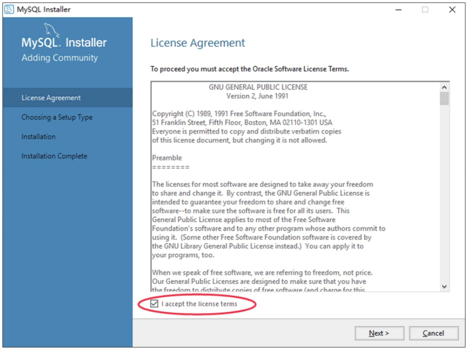
步骤 2)：进入“Choosing a Setup Type（安装类型选择）”窗口，根据右侧的安装类型描述文件选择适合自己的安装类型，这里选择默认的安装类型，如图所示。
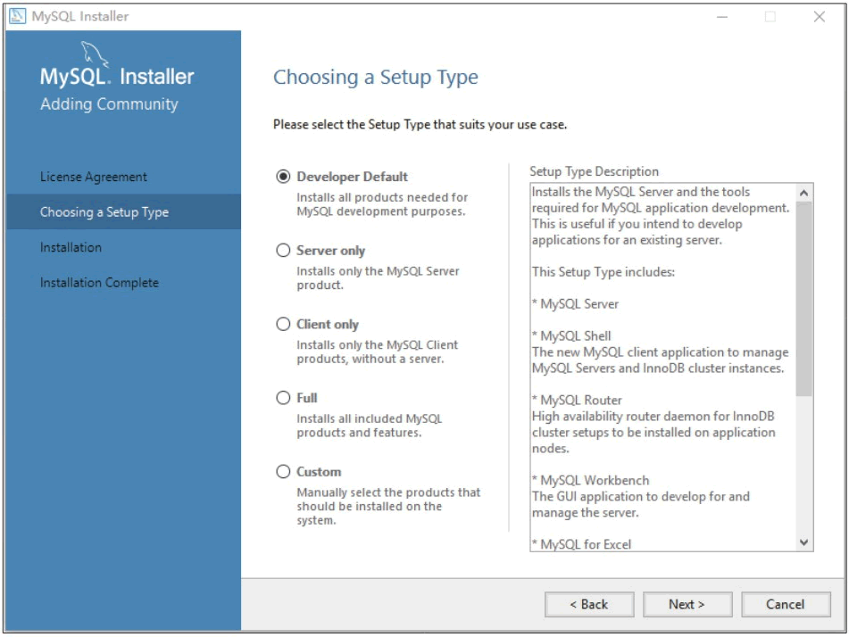
注意：Developer Default：默认安装类型；Server only：仅作为服务；Client only：仅作为客户端；Full：完全安装；Custom：自定义安装类型。
步骤 3)：根据所选择的安装类型安装 Windows 系统框架（framework），单击 Execute 按钮，安装程序会自动完成框架的安装，如图所示。
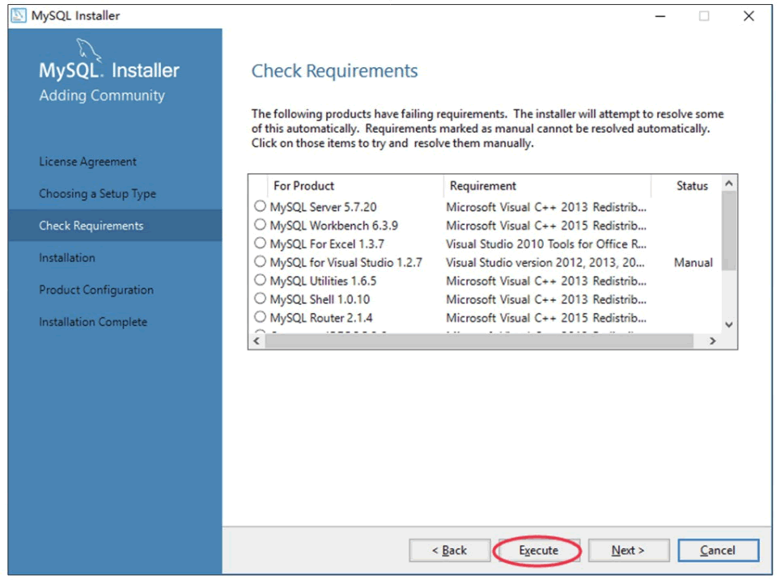
当弹出安装程序窗口时，勾选“我同意许可条款和条件”复选框，然后单击“安装”按钮，如图所示。
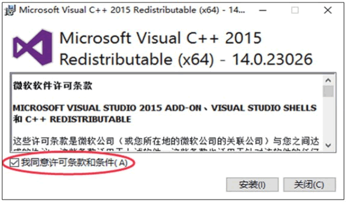
弹出“设置成功”的界面，表示该框架已经安装完成，单击“关闭”按钮即可。所有的框架安装均可参考本操作，如图所示。
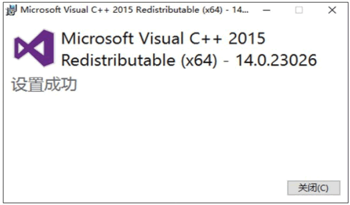
步骤 4)：所需框架均安装成功后，单击 “Next（下一步）”按钮，如图所示。
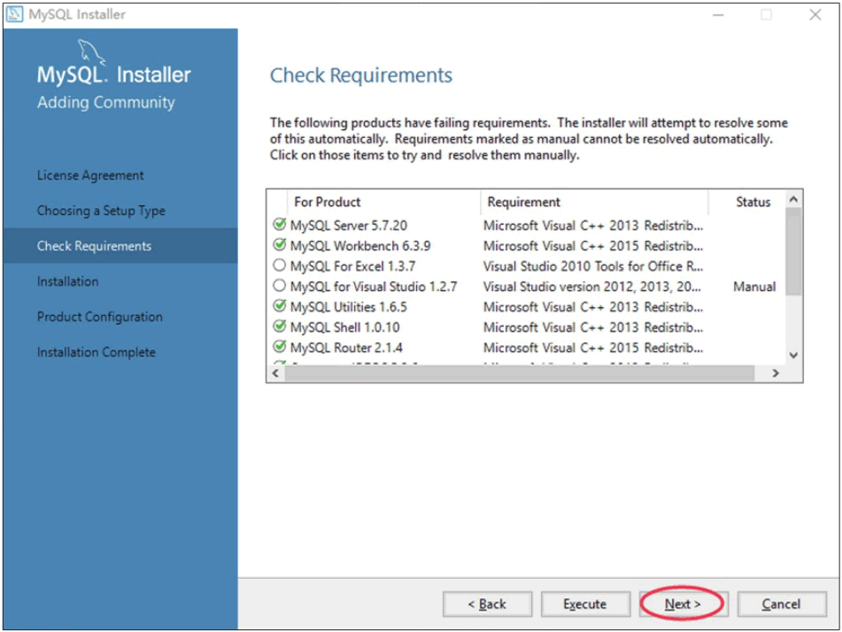
步骤 5)：进入安装确认窗口，单击 “Execute（执行）”按钮，开始 MySQL 各个组件的安装，如图所示。
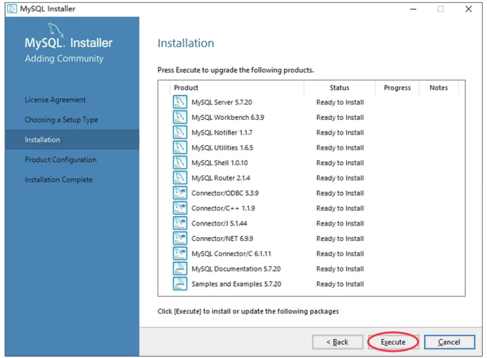
步骤 6)：开始安装 MySQL 文件，安装完成后在 “Status（状态）”列表下显示 “Complete（安装成功）”，如图所示。
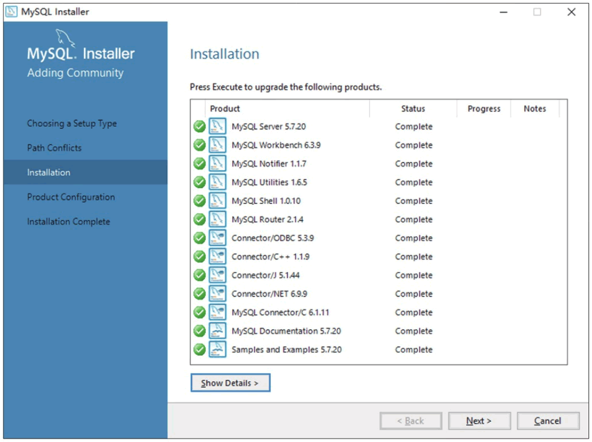
在 Linux 系统上安装 MySQL 步骤如下：
步骤 1)：在 CentOS 系统桌面上右击，选择 Open in Terminal，打开 Linux 命令行终端，如图所示。
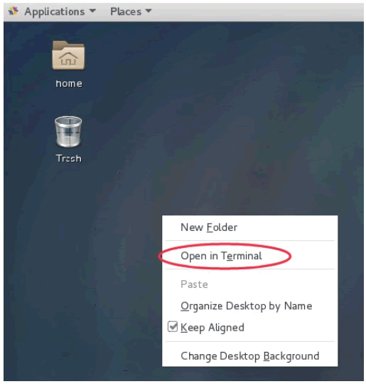
步骤 2)：在终端中进入 MySQL 安装包所在的目录 Downloads，执行解压缩命令：tar-zxvf mysql-5.7.20-linux-glibc2.12-x86_64.tar.gz，将安装包解压到指定文件夹，如图所示。
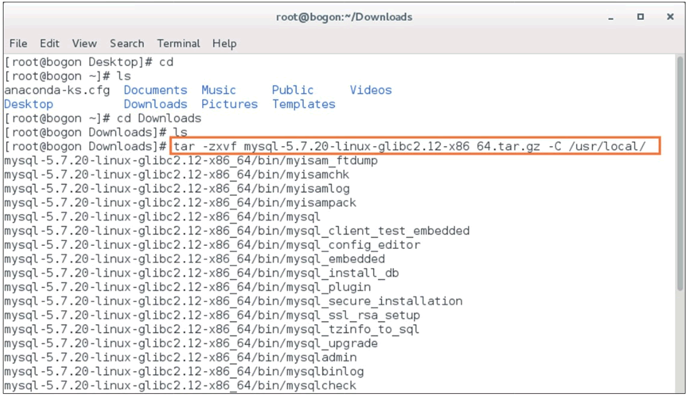
步骤 3)：将解压后的 MySQL 安装目录重命名为 mysql，便于之后的操作，执行重命名命令为：mv mysql-5.7.20-linux-glibc2.12-x86_64 mysql，同时执行命令：groupadd mysql 和 useradd-r-g mysql mysql，添加 mysql 用户组和 mysql 用户。在 MySQL 的安装目录创建 mysql-files 目录，用来保存 mysql 的数据文件和配置文件，然后初始化 MySQL，此时生成临时密码，如图所示。
注意：目录结尾不要加/。
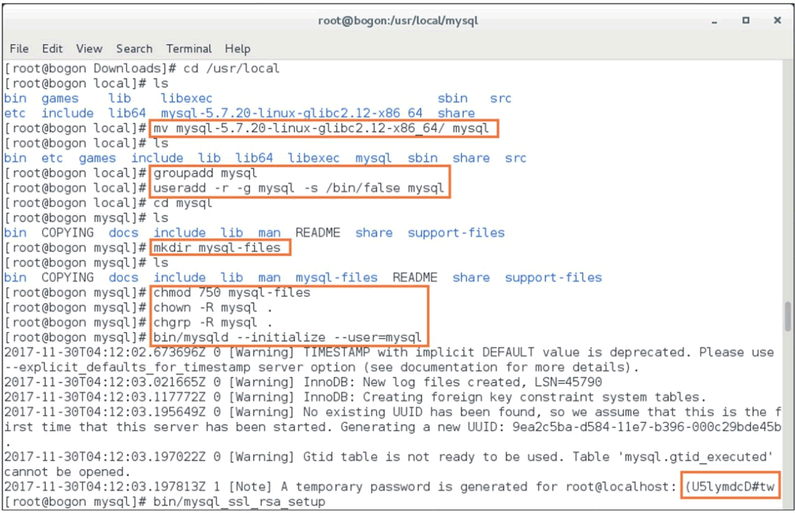
步骤 4)：对用户密码进行 RSA 加密处理，执行命令为 bin/mysql_ssl_rsa_setup，如图所示。
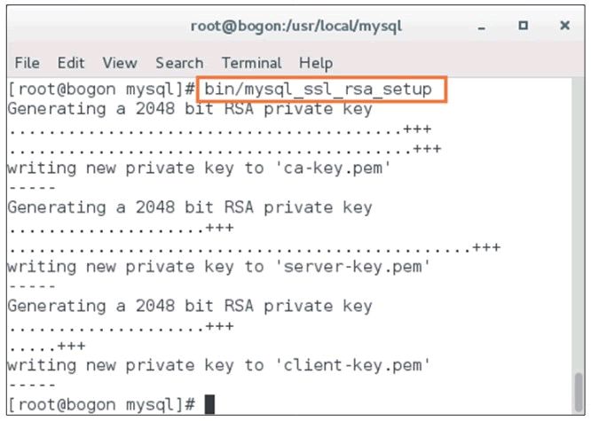
步骤 5)：为 MySQL 的配置文件 /etc/my.cnf 生成 pid，如图所示。
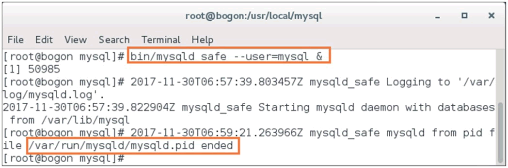
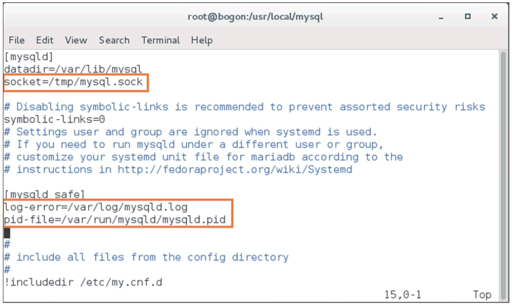
步骤 7)：启动 MySQL 服务，执行命令为 sudo support-files/mysql.server start，如图所示。
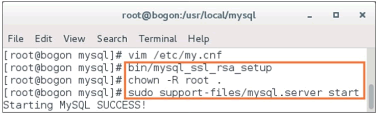
步骤 8)：使用 root 用户登录数据库，密码为之前生成的临时密码，进入 MySQL 数据库管理系统界面，如图所示。
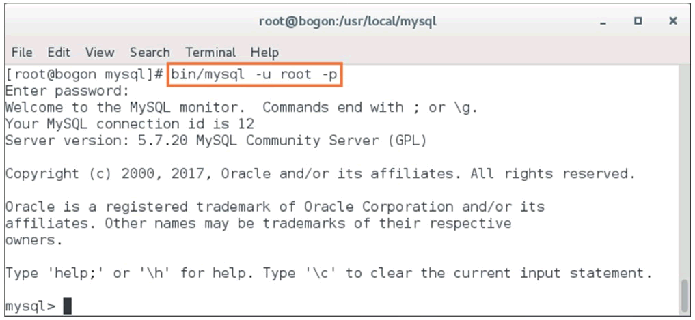
步骤 9)：在 MySQL 中输入简单语句，验证 MySQL 在 CentOS 系统中安装成功，如图所示。
关注公众号「站长严长生」，在手机上阅读所有教程，随时随地都能学习。内含一款搜索神器，免费下载全网书籍和视频。

微信扫码关注公众号